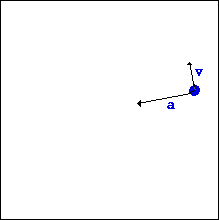

When an object moves in a circular path, we call it circular motion. A satellite moving in a geosynchronous orbit around the earth is an example of circular motion. Circular motion is an interesting field of study, as it has many special characteristics
Characteristics of Circular Motion
When an object moves in a circle, it continuously changes its direction. This means that at every instant, the object moves at a tangent to the circular path in which it travels. The velocity vector is also directed along the tangent. You can demonstrate this using a simple experiment. Tie a stone to a piece of string, and spin it by holding one end of the string so that the stone travels in a circle. If you let go of the string, the stone will travel in a straight line.
Types of Circular Motion
Uniform Circular Motion - When the speed of the moving object does not change as it travels in the circular path.
Non-Uniform Circular Motion - When there are variations in speed, we call it non-uniform circular motion. However, as there is a continuous change in the direction, an object moving in a circle is always accelerating, even when it moves at a constant speed. The acceleration is directed inwards, towards the center of the circular path.
To produce an acceleration, a net force has to be act on the system. The net force is directed perpendicular to the velocity vector, towards the center of the circular path. This force is called the centripetal force. In the absence of the centripetal force, the object will travel in a straight line. Hence, the effect of the centripetal force is to continuously change the direction of the moving object, forcing it to move in a circle
Examples
Example #1: Moon Orbiting the Earth 
Example #2: Athlete performing a hammer throw
Example #3: An aircraft moving in a loop
Problems
Sample Problem #1:
A 900-kg car moving at 10 m/s takes a turn around a circle with a radius of 25.0 m. Determine the acceleration and the net force acting upon the car.
The solution of this problem begins with the identification of the known and requested information.
Known Information:
m = 900 kg
v = 10.0 m/s
R = 25.0 m
Requested Information:
a = ????
Fnet = ????
STEP 1:
To determine the acceleration of the car, use the equation a = v2 / R. The solution is as follows:
a = v2 / R
a = (10.0 m/s)2 / (25.0 m)
a = (100 m2/s2) / (25.0 m)
a = 4 m/s2
STEP 2:
To determine the net force acting upon the car, use the equation Fnet = m•a. The solution is as follows.
Fnet = m • a
Fnet = (900 kg) • (4 m/s2)
Fnet = 3600 N
Sample Problem #2:
A 95-kg halfback makes a turn on the football field. The halfback sweeps out a path that is a portion of a circle with a radius of 12-meters. The halfback makes a quarter of a turn around the circle in 2.1 seconds. Determine the speed, acceleration and net force acting upon the halfback.
The solution of this problem begins with the identification of the known and requested information.
Known Information:
m = 95.0 kg
R = 12.0 m
Traveled 1/4-th of the circumference in 2.1 s
Requested Information:
v = ????
a = ????
Fnet = ????
STEP 1:
To determine the speed of the halfback, use the equation v = d / t where the d is one-fourth of the circumference and the time is 2.1 s. The solution is as follows:
v = d / t
v = (0.25 • 2 • pi • R) / t
v = (0.25 • 2 • 3.14 • 12.0 m) / (2.1 s)
v = 8.97 m/s
STEP 2:
To determine the acceleration of the halfback, use the equation a = v2 / R. The solution is as follows:
a = v2 / R
a = (8.97 m/s)2 / (12.0 m)
a = (80.5 m2/s2) / (12.0 m)
a = 6.71 m/s2
STEP 3:
To determine the net force acting upon the halfback, use the equation Fnet = m•a. The solution is as follows.
Fnet = m*a
Fnet = (95.0 kg)*(6.71 m/s2)
Fnet = 637 N